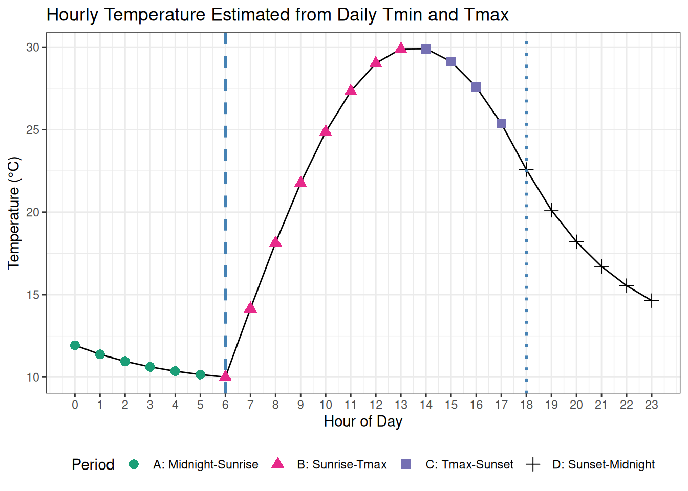

HourlySinPpAdjusted
The HourlySinPpAdjusted function provides hourly estimates of air temperature by interpolating between daily maximum and minimum temperatures using a sinusoidal method during sunlight hours and an exponential decline during nighttime hours (Goudriaan and Van Laar 1994).
Overview
This model estimates hourly air temperature (Ta) from daily minimum (Tmin) and maximum (Tmax) temperatures and day length (d). The interpolation approach follows the method described by (Goudriaan and Van Laar 1994), where:
- During sunlight hours, temperature follows a sinusoidal curve fitted between
TminandTmax, - During night hours, temperature declines exponentially from sunset to next day’s sunrise minimum,
- Sunrise (
Hsrise) is assumed at12 − d/2and sunset (Hsset) is calculated accordingly.
If a Controlled Environment (CE) module is linked, the model will use actual hourly air temperatures provided by CE instead of calculating them.
Model Structure
This section describes how this model is positioned within the APSIM framework. It outlines the broader structural and computational components that define its role and interactions in the simulation system.
This model inherits structural and functional behaviour from the following core APSIM components:
Connections to Other Components
This section describes how the model interacts with other components in the APSIM Next Generation framework.
These connections allow the model to exchange information—such as environmental conditions, developmental stage, or physiological responses—with other parts of the simulation system. For a general overview of how model components are connected in APSIM, see the Connections Overview.
| Component | Model | Connection Type | Description |
|---|---|---|---|
| MetData | IWeather | Link | Provides daily minimum and maximum temperatures, and calculates day length, sunrise, and sunset times. |
| CE | ControlledEnvironment | Link, Optional | If present, overrides the interpolated sub-daily values using provided hourly temperature data (SubDailyTemperature). This is used in controlled environment simulations (e.g., growth chambers) where actual hourly measurements are available. |
Model Variables
This section lists the key variables that describe or control the behaviour of this component. Some variables can be adjusted by the user to modify how the model behaves (configurable), while others are calculated internally and can be viewed as model outputs (reportable). For a general explanation of variable types and how they are used within the APSIM Next Generation framework, see the Model Variables Overview.
Configurable and Reportable Properties
| Parameter | Type | Description |
|---|---|---|
| Daylength (d) | double | Computed internally via MetData.CalculateDayLength(-6) to define the daylight duration (based on -6° sun angle, commonly used in agriculture to define twilight start and end). |
| Sunrise (Hsrise) | double | Calculated using MetData.CalculateSunRise(). Used to define the time range for each temperature estimation period (A–D). |
| Sunset (Hsset) | double | Calculated using MetData.CalculateSunSet(). Used to define the time range for each temperature estimation period (A–D). |
| TmaxB | double | Tmax from the previous day, used to estimate temperatures across midnight transitions. |
| TminA | double | Tmin from the next day, used to estimate temperatures across sunset transitions. |
| P | double | Shape factor constant (set to 1.5) to determine the shift of maximum temperature from solar noon. |
| TC | double | Time constant (set to 4.0) controlling the exponential cooling rate during the night. |
Read-Only Reportable Properties
| Property | Type | Description |
|---|---|---|
OutputValueType |
string | The type of variable for sub-daily values as air temperature |
Tsset |
double | Temperature at the most recent sunset (°C) |
Events
This section describes the events associated with this component. Events are signals or notifications that indicate when a particular process occurs within the simulation, or when a component needs to respond to a change in another part of the system. Some events are listened for by this component to trigger its processes, while others are raised to inform other components about changes. For a general overview of how APSIM Next Generation uses events to coordinate processes between components, see the Events Overview.
Events Listened For
These are signals or notifications that the function listens for from other parts of the simulation:
| Event | Purpose |
|---|---|
| Commencing | Nothing to calculate at the start of the simulation |
Events Raised to
No events are raised by this function.
Processes and Algorithms
This section describes the scientific processes and algorithms represented by this component. Each process corresponds to a biological, physical, or chemical mechanism simulated during a model time step. Where appropriate, equations or conceptual summaries are provided to explain how the process operates within the APSIM Next Generation framework.
Hourly estimates of air temperature (Ta) are interpolated from daily maximum (Tmax), minimum (Tmin) temperatures and daylength (d) using the method of (Goudriaan and Van Laar 1994). The calculation divides the 24-hour day into four periods based on sunrise and sunset:
- Period A: Midnight to Sunrise (Th < Hsrise)
Temperature is modeled as an exponential decline from the temperature at the previous day’s sunset (\(Tsset\)) down to the minimum temperature (Tmin) at sunrise. The hour of sunrise is denoted as \(H_{srise}\), and sunset as \(H_{sset}\). The temperature \(T_a\) at hour \(Th\) in this period is given by:
\[ T_a = \frac{T_{min} - T_{sset} \cdot e^{-\frac{n}{TC}} + (T_{sset} - T_{min}) \cdot e^{-\frac{(Th + 24 - H_{sset})}{TC}}}{1 - e^{-\frac{n}{TC}}} \]
where
\[ T_{sset} = T_{min} + (T_{maxB} - T_{min}) \cdot \sin\left(\frac{\pi d}{d + 2P}\right) \]
and
\[ n = 24 - d \]
Here, \(T_{maxB}\) is the previous day’s maximum temperature, \(P\) and \(TC\) are constants (1.5 and 4.0 respectively).
- Period B: Sunrise to Tmax ( \(H_{srise} \leq Th < 12 + P\) )
During sunlight hours, the temperature follows a sinusoidal curve rising from \(T_{min}\) at sunrise to \(T_{max}\) at hour \(12 + P\):
\[ T_a = T_{min} + (T_{max} - T_{min}) \cdot \sin\left(\frac{\pi (Th - H_{srise})}{d + 2P}\right) \]
- Period C: Tmax to Sunset ( \(12 + P \leq Th < H_{sset}\) )
The temperature follows a sinusoidal decline from \(T_{max}\) to the next day’s minimum temperature \(T_{minA}\):
\[ T_a = T_{minA} + (T_{max} - T_{minA}) \cdot \sin\left(\frac{\pi (Th - H_{srise})}{d + 2P}\right) \]
- Period D: Sunset to Midnight ( \(Th \geq H_{sset}\) )
After sunset, temperature exponentially declines from the temperature at sunset \(T_{sset}\) to the minimum temperature at sunrise. The temperature is computed as:
\[ T_{sset} = T_{minA} + (T_{max} - T_{minA}) \cdot \sin\left(\frac{\pi d}{d + 2P}\right) \]
\[ T_a = \frac{T_{minA} - T_{sset} \cdot e^{-\frac{n}{TC}} + (T_{sset} - T_{minA}) \cdot e^{-\frac{(Th - H_{sset})}{TC}}}{1 - e^{-\frac{n}{TC}}} \]
| Symbol | Description | Typical Value / Units |
|---|---|---|
| Constants | ||
| \(P\) | Shape factor for Tmax shift | 1.5 |
| \(TC\) | Exponential cooling time constant | 4.0 |
| Variables | ||
| \(T_{min}\) | Daily minimum temperature | °C |
| \(T_{max}\) | Daily maximum temperature | °C |
| \(T_{minA}\) | Next day minimum temperature | °C |
| \(T_{maxB}\) | Previous day maximum temperature | °C |
| \(d\) | Day length | hours |
| \(H_{srise}\) | Hour of sunrise | hours (0–24) |
| \(H_{sset}\) | Hour of sunset | hours (0–24) |
| \(Th\) | Current hour | hours (0–23) |
| \(n\) | Night length (\(n = 24 - d\)) | hours |
This methodology ensures a realistic diurnal temperature profile by combining sinusoidal interpolation during daylight and exponential decay at night, adjusted for actual daylength and temperature extremes.
If \(T_{minA}\) or \(T_{maxB}\) are not provided, the model will use the current day’s minimum or maximum temperatures, e.g. in the beginning or ending of simulation without weather data.
User Interface
HourlySinPpAdjusted can be added as a child of a SubDailyInterpolation node in the model tree. Right-click the parent node, select “Add Model…”, and search for HourlySinPpAdjusted in the Filter Box.
Practical Example
We estimate hourly air temperature (\(T_h\)) using a sinusoidal + exponential method, with the following inputs:
| Parameter | Value | Description |
|---|---|---|
| \(T_\text{min}\) | \(10^\circ\)C | Today’s minimum temperature |
| \(T_\text{max}\) | \(30^\circ\)C | Today’s maximum temperature |
| \(T_\text{maxB}\) | \(28^\circ\)C | Yesterday’s maximum temperature |
| \(T_\text{minA}\) | \(12^\circ\)C | Tomorrow’s minimum temperature |
| Daylength \(d\) | 12 hours | Length of daylight |
| Sunrise | 6 | Hour of sunrise |
| Sunset | 18 | Hour of sunset |
| \(P\) | 1.5 | Shape factor constant |
| \(T_c\) | 4.0 | Exponential cooling constant |
The following figure shows the estimated hourly air temperature profile for a day with these inputs and parameters:
See Also
- Source code: HourlySinPpAdjusted.cs on GitHub
References
Goudriaan, J., and H. H. Van Laar. 1994. “Climatic Factors.” In Modelling Potential Crop Growth Processes, edited by J. Goudriaan and H. H. Van Laar, 29–49. Dordrecht: Springer Netherlands. https://doi.org/10.1007/978-94-011-0750-1_3.